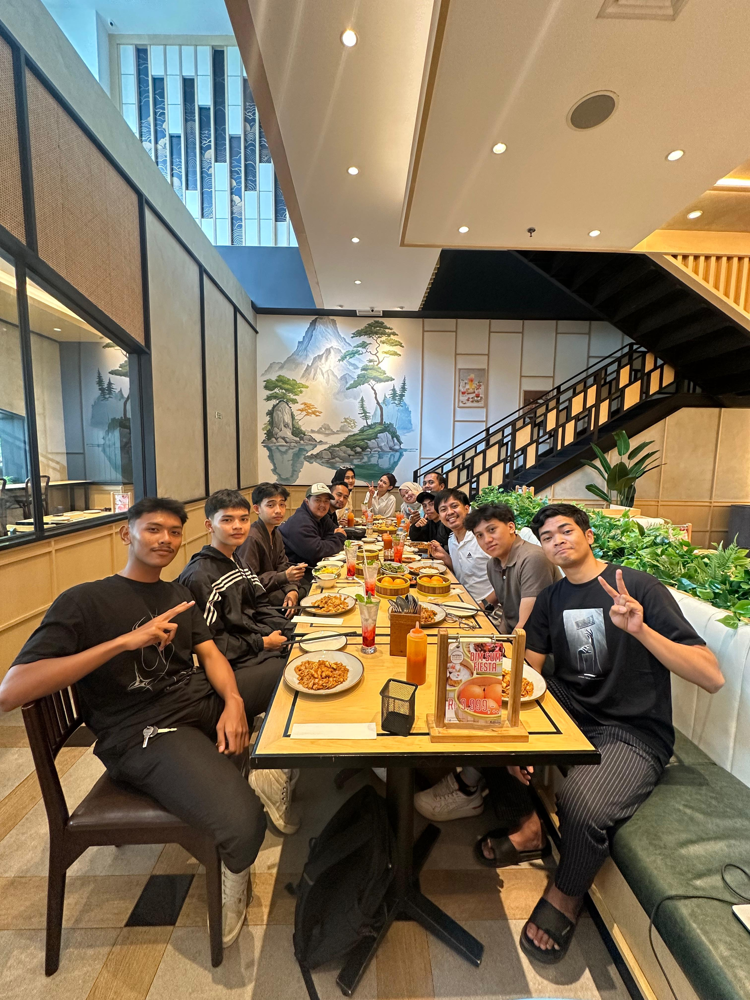

TRADING ROOM
TRADING ROOM
-
Techroom adalah perusahaan teknologi informasi dan komunikasi (ICT) yang didirikan pada tahun 2021 dengan tujuan utama membangun jaringan besar profesional teknologi di berbagai bidang. Mereka menyediakan platform bagi para penggemar teknologi untuk berbagi ide, mengembangkan keterampilan, dan belajar bersama, sambil membantu bisnis memanfaatkan potensi internet.
Selain itu, Techroom menawarkan berbagai layanan, termasuk pengembangan web dan aplikasi mobile, desain UI/UX, konsultasi IT, solusi IT, jaringan pengembang, mentorship, dan pemeliharaan perangkat lunak. Mereka juga memiliki komunitas pengembang yang berkembang pesat, di mana anggota dapat berinteraksi baik secara online maupun offline untuk berbagi ide dan saling membantu dalam pertumbuhan profesional.
